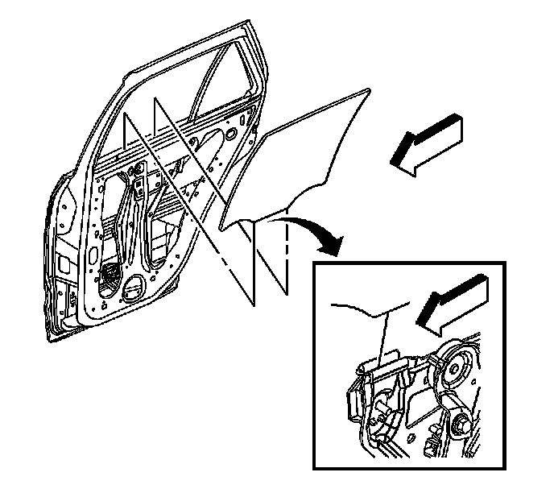

Rear Door Window Glass: Service and Repair
Rear Side Door Window Replacement
Removal Procedure
Caution: Refer to Glass and Sheet Metal Handling Caution .

1. Lower the window all the way down.
2. Remove the door trim panel. Refer to Rear Side Door Trim Panel Replacement (Service and Repair) .
3. Remove the water deflector. Refer to Rear Side Door Water Deflector Replacement (Service and Repair) .
4. Remove the window inner belt sealing strip. Refer to Rear Door Window Belt Inner Sealing Strip Replacement (Rear Door Window Belt Inner Sealing Strip Replacement) .
5. Remove the inner window seal. Refer to Rear Side Door Window Inner Weatherstrip Replacement (Rear Side Door Window Inner Weatherstrip Replacement) .
6. Remove the window outer belt sealing strip. Refer to Rear Door Window Belt Outer Sealing Strip Replacement (Rear Door Window Belt Outer Sealing Strip Replacement) .
7. Remove the door applique. Refer to Rear Door Frame Applique Replacement () .
8. Connect the door trim panel electrical connector.
9. Raise the window to the full up position.
10. Tape the window in the up position.
11. Remove the rear door stationary window post bolt.
12. Loosen the window clamp nuts 4 revolutions.
13. Using the power window switch, lower the window regulator to the full down position.
14. Remove the tape.
15. Slide the window down past the window regulator clamps and out of the front window run channel.
16. Lift the window out of the door.
Installation Procedure
1. Install the window down into the door assembly, inboard of the rear door stationary post, past the window clamps.
2. Position the window into the stationary window post channel.
3. Raise the window past the window clamps.
4. Lower the window into the window clamps.
Notice: Refer to Fastener Notice (Fastener Notice) .
5. Install the stationary window post bolt.
Tighten the bolt to 9 N.m (80 lb in).
6. Push the window forward into the front glass run channel.
Important: Start the vehicle in order to ensure maximum power to the window motor. This is required to fully seat the window for adjustment.
7. Start the vehicle.
8. Using the power window switch, raise the window to the full up position.
Tighten the window clamp nuts to 11 N.m (98 lb in).
9. Inspect the window for proper operation and a tight seal.
10. Shut off the vehicle.
11. Install the inner window seal. Refer to Rear Side Door Window Inner Weatherstrip Replacement (Rear Side Door Window Inner Weatherstrip Replacement) .
12. Install the window outer belt sealing strip. Refer to Rear Door Window Belt Outer Sealing Strip Replacement (Rear Door Window Belt Outer Sealing Strip Replacement) .
13. Install the window inner belt sealing strip. Refer to Rear Door Window Belt Inner Sealing Strip Replacement (Rear Door Window Belt Inner Sealing Strip Replacement) .
14. Install water deflector. Refer to Rear Side Door Water Deflector Replacement (Service and Repair) .
15. Install the door trim panel. Refer to Rear Side Door Trim Panel Replacement (Service and Repair) .